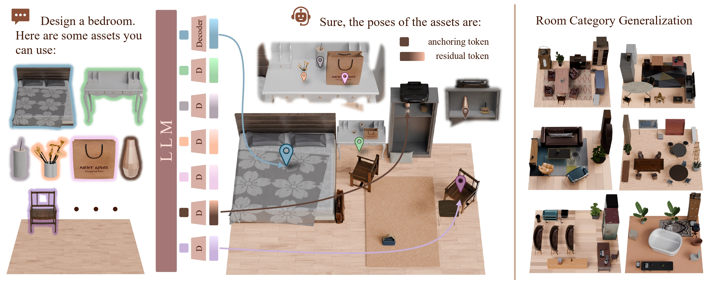
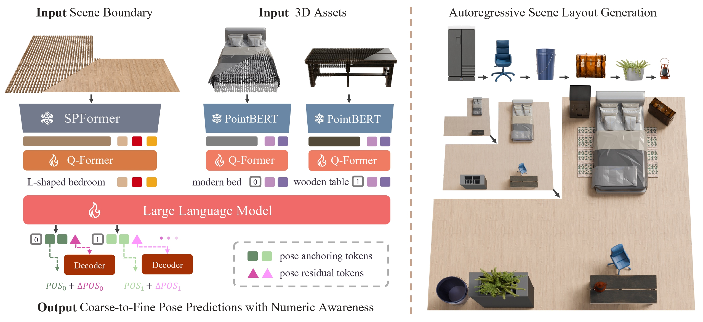
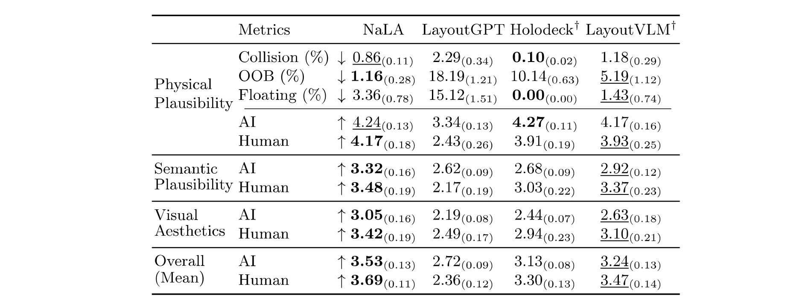
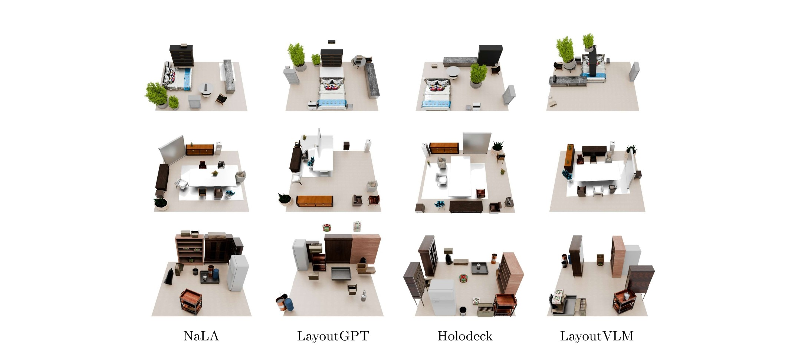

Large Language Models have recently become central planners for 3D scene generation, but existing layout agents still rely on general-purpose backbones that are limited in input modalities, output representations, and spatial reasoning. They typically consume only text or image descriptions, which do not capture detailed 3D geometry, and they often predict poses in a token-by-token textual format that is inefficient and imprecise.
NaLA addresses these issues by introducing geometry perception for both scenes and assets, together with an efficient coarse-to-fine asset pose generation framework. The model encodes point clouds from the scene and asset library, injects them into the LLM backbone, and autoregressively generates placements in a compact format. Trained with a two-stage strategy on high-quality 3D layout datasets, NaLA learns strong 3D reasoning and layout planning abilities.

NaLA follows an end-to-end pipeline. First, point clouds of the scene and each asset are encoded into tokens. These input 3D tokens are combined with text tokens and fed into the LLM. Then, the model utilizes specially-designed output anchoring tokens to predict a coarse grid location and orientation, followed by a output residual token that outputs fine-grained pose residuals, scale, and rotation refinement. Special ID tokens are used so that each predicted pose is matched to the correct asset.

We compare NaLA against representative baselines on physical plausibility, semantic plausibility, and visual aesthetics. NaLA achieves the best overall performance, balancing physical precision with semantic richness.

